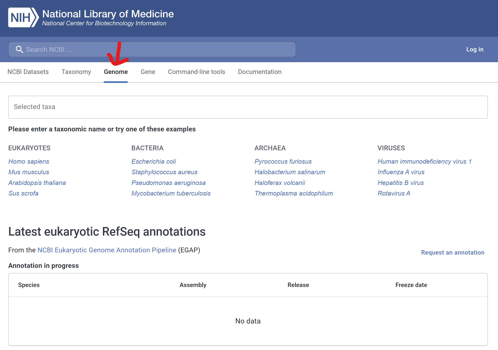

library(rentrez)
recs <- entrez_fetch(db="nuccore", id="U00096.3", rettype="gbff")
write(recs, file="examples/u00096-3.gb")12 HOMEWORK
12.1 HOMEWORK
You will write a report describing the genome wide gene expression of putative proteins in your target organism. You will have a Quarto file (qmd file) at the end and upload the file on klms.kaist.ac.kr until 22nd Dec. It should include R code-chunk that can be executable. Insert figures in the qmd file.
See the following guide. These steps in the guide include minimal requirements for your reference. You can do any additional work you want. You can do it with the same organism but don’t use the same expression sample (GSE) with the following guide.
12.1.1 Preparation a qmd file
- Install R, Rstudio, Quarto on your local computer (OR use posit-cloud)
- Create a new quarto file
- Start with the YAML head as follows
```{r}
---
title: "HOMEWORK"
eval: false
author: Your name and student number
date: The date you make this
format:
html:
toc: true
number-sections: true
code-overflow: wrap
---
```12.1.2 Choose a target organism
Additional requirements
- Include a brief description of the organism in the quarto file
- Choose a target organism you are interested in
- Search for its information in NCBI genome database (https://www.ncbi.nlm.nih.gov/datasets/genome/

- Click “Scientific name”
- Confirm if there is any Series in GEO database and Click Reference genome ID
- At the bottom, memorize Genbank id “U00096.3”
12.1.3 Download
- Use
rentrezto download gb file (it takes time)
12.1.4 Visualize genes with putative functions
Additional requirements
- What’s the proportion of the putative proteins
- Use
readGenBank()function ingenbankrpackage to load the genbank file - Use
cds()function inBiostringspackage to load cds information - Use
pyrangesfunction for filtering - Use
ggbiofor visualization
library(genbankr)
library(Biostrings)
library(BSgenome)
library(plyranges)
library(ggbio)
mygenome <- readGenBank("examples/u00096-3.gb")
mycds <- cds(mygenome)
gr1 <- granges(mycds)
gr2 <- mycds |>
plyranges::filter(grepl("putative", product)) |>
granges()
ggplot() +
layout_circle(mycds, geom = "ideo", fill = "gray70", radius = 9, trackWidth = 1) +
layout_circle(mycds, geom = "scale", size = 3, trackWidth = 1, scale.n=20) +
layout_circle(gr1, geom = "rect", color = "steelblue", radius = 5) +
layout_circle(gr2, geom = "rect", trackWidth = 1, scale.n=20, radius = 4) 12.1.5 Codon usage
Additional requirements
- How long is the whole genome?
- What is the average length of cds?
- Plot for the codon usage
- Use
getSeq()function inBSgenomepackage to read whole genome sequence
myseq <- BSgenome::getSeq(mygenome)
mycdsseq <- BSgenome::getSeq(myseq, gr1)
codon_usage <- trinucleotideFrequency(mycdsseq, step=3)
global_codon_usage <- trinucleotideFrequency(mycdsseq, step=3, simplify.as="collapsed")
names(global_codon_usage) <- GENETIC_CODE[names(global_codon_usage)]
codonusage2 <- split(global_codon_usage, names(global_codon_usage))
global_codon_usage2 <- sapply(codonusage2, sum) - Use
ggplotfor the bar graph - Use
dplyr,tibblefor tidy data (loadtidyverse)
library(tidyverse)
global_codon_usage2 |>
data.frame() |>
tibble::rownames_to_column() |>
dplyr::rename(gcu = global_codon_usage2, aa = rowname) |>
ggplot(aes(x=aa, y=gcu)) +
geom_bar(stat="identity")12.1.6 CDS length distribution
seqlen <- nchar(mycdsseq) |>
data.frame() |>
dplyr::rename(len = nchar.mycdsseq.)
seqlen |>
ggplot(aes(x=len)) +
geom_density(fill="green", alpha=0.2, adjust=3) +
scale_x_continuous(limits = c(-1000, 8000))
seqlen |>
summarize(m = mean(len), s = sd(len))12.1.7 Load GEO data
Additional requirements
- Include description of the data
- Click Series related to the target organism
- Choose any GSE with enough number of samples
- Avoid to use zero feature gse dataset as below. Try to use another gse dataset which contains features
library(GEOquery)
gse <- getGEO('GSE17276', GSEMatrix = TRUE, destdir = "examples")
mygse <- gse[[1]]
class(mygse)
mygse12.1.8 Draw boxplot
Additional requirements
- Describe what is the difference between normalization and standardization
- Do you need to normalize your data?
library(tidyverse)
mypdata <- pData(mygse)
myfdata <- fData(mygse)
myexp <- as.data.frame(exprs(mygse))
# boxplot
myexp |>
rownames_to_column() |>
pivot_longer(-rowname) |>
ggplot(aes(x=name, y=value)) +
geom_boxplot() 12.1.9 The expression of putative proteins
- Since we used the same organism for the genome info and GEO database, we can find the expression of putative genes
library(plyranges)
putative_locus_tags <- mycds |>
mcols() |>
data.frame() |>
dplyr::filter(grepl("putative", product)) |>
dplyr::slice_sample(n=100) |> ## 100 samples for visulization
dplyr::pull(locus_tag) - Get the expression of the putative protein genes
newexp <- myexp |>
bind_cols(myfdata) |>
dplyr::filter(ORF %in% putative_locus_tags) |>
dplyr::select(-ID, -GENE_SYMBOL) |>
dplyr::select(ORF, everything()) |>
tidyr::drop_na()- Merge two dataframes by accession number “GSMxxx” for the addition of group information (phenogroup)
phenogroup <- mypdata |>
dplyr::select(geo_accession, source_name_ch1)
newexp_t <- newexp |>
pivot_longer(-ORF) |>
pivot_wider(names_from = "ORF")
newexp_m <- phenogroup |>
left_join(newexp_t, by = join_by(geo_accession == name)) |>
dplyr::rename(accno = geo_accession, type = source_name_ch1)- Visualization of the putative genes with respect to the phenotype
newexp_m |>
pivot_longer(-c(accno, type)) |>
group_by(type, name) |>
summarize(m = mean(value), s = sd(value)) |>
ggplot(aes(x=type, y=m, fill=type)) +
geom_bar(stat="identity", position = "dodge") +
facet_wrap(name ~ .) +
scale_x_discrete(labels = NULL)